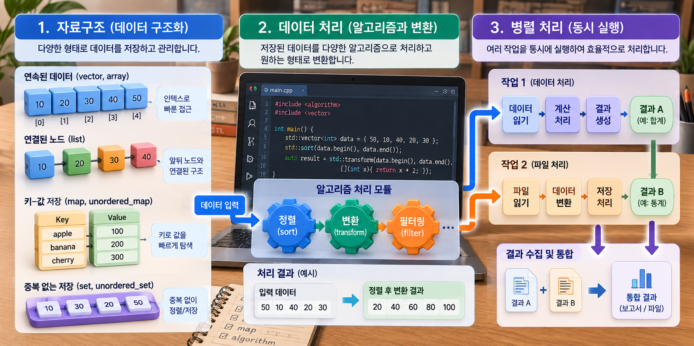
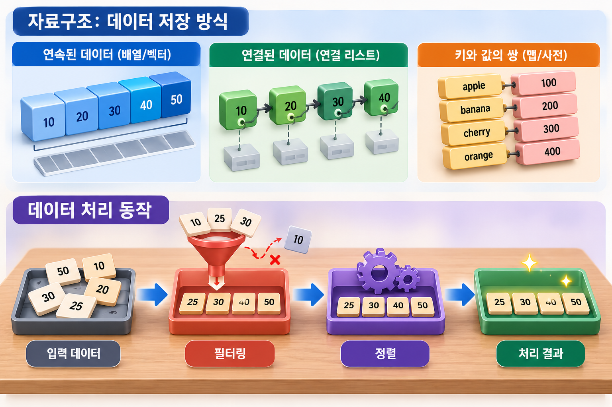
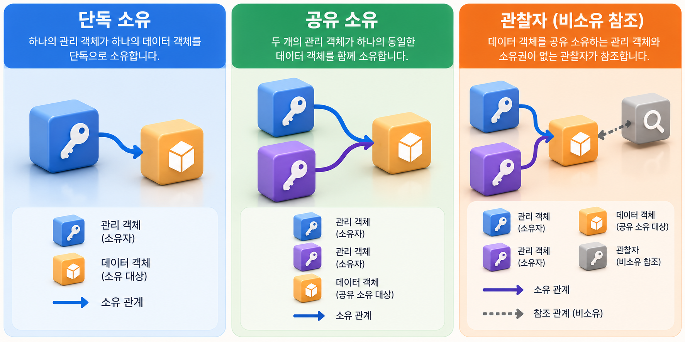
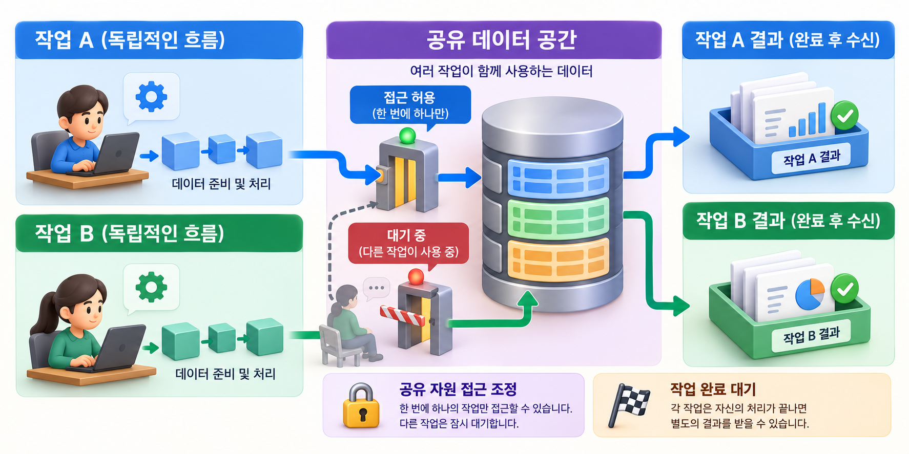

KOREA UNIVERSITY SEJONG / 2025 / SUBJECT 04
C++ 후반 수업,
자료 구조에서
동시성까지
컨테이너와 알고리즘, 객체의 소유와 여러 작업의 실행.
장기 개발자 과정에서 직접 진행한 C++ 후반 수업을 기록합니다.
빅데이터·IoT 소프트웨어 개발자 과정
프로그램의 구조와 실행을 함께 생각하기
2025년 3월부터 7월 15일까지 이어진 고려대 세종캠퍼스 장기 개발자 양성 과정의 네 번째 과목별 기록입니다. 과정 전반의 감독 경험 중, 이번 글은 직접 강의한 STL·모던 C++ 중심의 후반 수업에 범위를 둡니다.
- 교육 기관·형태
- 고려대학교 세종캠퍼스 · 오프라인
- 상세 기록의 기간
- 4월 21일 오후–25일
날짜별 강의·실습·복습·평가 - 학습 주제
- STL · 람다 · 파일 처리
스마트 포인터 · 이동 · 동시성 - 기록의 범위
- C++ 전체 기초 과정과 구분
5일 전일 강의 시간으로 환산하지 않음
MADAM 대표 활동 이전에 진행한 최수길의 교육 경험입니다. 수업 기록과 강의계획서·업무일지를 대조했습니다.

화면의 코드는 개념 표현입니다. std::transform 호출에는 출력 위치가 필요하므로 그림의 코드를 그대로 실행할 수는 없습니다. set은 정렬 순서를 유지하지만 unordered_set은 정렬을 보장하지 않으며, 여러 작업의 동시 실행이 항상 성능 향상을 뜻하지는 않습니다.
04.21 오후
컨테이너와 반복자로 데이터를 다루기
C++ 후반 수업은 4월 21일 오후 STL 소개로 시작했다. vector에 값을 추가하고 제거하면서 size와 capacity를 살펴보고, begin·end와 rbegin·rend를 이용한 순회를 실습했다. 데이터를 담는 구조와 그 안을 탐색하는 방법을 함께 익히는 구성이었다.
이어서 auto와 범위 기반 for문을 다뤘다. C 수업에서 배열과 인덱스를 직접 관리하던 경험을 바탕으로, 컨테이너가 제공하는 기능과 반복자를 사용해 같은 작업을 표현하는 방법을 살펴보았다. 코드를 짧게 쓰는 것뿐 아니라 어떤 자료를 어떤 방식으로 순회하는지 읽는 데 의미가 있었다.
공개 수업 기록은 이날 5~8교시만 담고 있다. 따라서 이 글은 해당 오후 수업부터 시작하며, 오전이나 그 이전 C++ 기초 과정의 구체적인 진행 내용을 추정해서 채우지 않았다.
04.22
데이터 구조의 선택과 처리 동작의 표현
22일에는 string의 기본 연산을 복습하고 map과 list, vector와 list의 비교 예제를 다뤘다. 값을 저장한다는 공통점 안에서도 자료를 찾거나 순회하고 변경하는 방식이 달라진다는 점을 예제로 살펴보는 시간이었다.
자료구조를 익히는 흐름은 람다 함수와 함수 객체, DataProcessor 클래스 작성으로 이어졌다. [=] 캡처와 mutable을 포함한 예제를 살펴보며, 데이터를 담는 객체와 데이터에 적용할 동작을 코드로 어떻게 표현할지 다뤘다.
범위 기반 for문을 사용할 수 있도록 클래스를 구성하는 예제, nullptr와 constexpr 설명, range_example 통합 예제도 이어졌다. 강사 저장소의 range_example은 main.cpp, processor.cpp, processor.hpp로 나뉘어 있어 사용 지점·구현·선언을 구분한 구조를 확인할 수 있다.
이날의 교육 내용은 컨테이너 이름을 나열하는 데서 끝나지 않는다. 값을 보관할 구조를 선택하고, 순회 방법을 정하고, 처리 동작을 묶는 순서로 작은 프로그램의 구성을 생각해 보는 단계였다.
04.23 오전
파일을 읽고 알고리즘을 적용하는 흐름
23일 오전에는 priority_queue 실습에 이어 fstream으로 파일을 읽고 unordered_map으로 단어를 세는 예제를 진행했다. sstream과 transform·copy·copy_if·sort·find 등 알고리즘을 다루면서, 외부 데이터를 읽어 필요한 형태로 처리하는 흐름을 연결했다.
sort_fstream.cpp에서 파일을 읽는 예제를 작성한 뒤 sort_fstream2.cpp에서는 클래스 캡슐화로 구조를 정리했다. partition과 merge도 설명 범위에 포함됐다. 개별 함수의 사용법과 여러 단계의 데이터 처리를 묶는 작업이 함께 진행된 셈이다.
이 흐름은 장기 과정에서 이후 다룰 센서 기록이나 네트워크 데이터 처리와도 연결된다. 데이터를 어디에 저장할지뿐 아니라 읽기·변환·정렬·출력 중 어떤 역할을 어느 부분에 배치할지 생각하는 기반이 된다. 여기서는 특정 성능 향상이나 모든 교육생의 완성 결과를 주장하지 않고 실제 실습 범위를 설명한다.

자료구조와 처리 단계의 관계를 설명한 그림입니다. 아래 입력에는 없는 값 40이 결과에 포함되어 있어 실제 필터링·정렬 결과로 해석하면 안 됩니다. 필터링과 정렬만으로 새로운 값이 추가되지는 않습니다.
04.23 오후–04.24 오전
메모리의 소유 관계와 이동을 구분하기
23일 오후에는 unique_ptr, shared_ptr, weak_ptr를 다뤘다. 단독 소유와 공유 소유, 순환 참조 문제를 살펴보며 객체가 존재하는 동안 누가 자원을 관리하는지 생각하는 시간을 가졌다. C 과목에서 배운 포인터와 동적 메모리 개념을 소유 관계라는 관점으로 다시 정리하는 단계였다.
24일 오전에는 TreeNode 예제로 shared_ptr를 복습했다. moveVector와 forward 예제, 이동을 다루는 클래스 작성으로 범위를 넓혔다. 수업 기록에는 move를 이용한 속도 비교가 있으나 측정 조건이나 수치가 확인되지 않아, 이 글에서는 성능 개선의 크기를 제시하지 않는다.
이동과 공유 소유는 같은 개념으로 묶지 않았다. 수업 기록에도 직접 작성한 이동 관련 클래스에 참조 횟수 관리가 자동으로 적용되는 것은 아니라는 설명이 있다. 객체를 다른 곳으로 넘기는 일과 여러 곳에서 함께 소유하는 일을 구분하는 것이 중요한 학습 지점이었다.

단독 소유·공유 소유·비소유 관찰은 각각 unique_ptr·shared_ptr·weak_ptr의 역할에 대응합니다. weak_ptr는 객체 수명을 연장하지 않으며, 접근할 때 lock()으로 얻은 shared_ptr가 유효한지 확인합니다.
04.24 오후
여러 결과와 여러 작업을 함께 다루기
24일에는 variant·optional·any 예제를 작성하고 VS Code와 CMake의 언어 표준 설정을 C++23으로 맞췄다. 이는 당시 실습 환경의 설정 기록이다. 해당 기능들이 모두 C++23에서 처음 도입됐다는 의미로 사용하지 않는다.
이어서 thread와 mutex, async와 future를 실습했다. 실행 흐름을 나누고 결과를 받는 방법을 살펴본 뒤 로깅과 작업 종료 대기 처리를 추가했다. multithreadTask 예제와 finalModernExample의 데이터 관리 실습으로 여러 기능을 함께 사용하는 시간을 가졌다.
주간 업무일지에는 공유 자원 경쟁 문제와 mutex·join 등을 보완한 기록이 있다. 공유 데이터에 접근하는 순서를 조정하는 일과 작업이 끝날 때까지 기다리는 일을 구분해서 이해하는 것이 필요했다. 이 글은 당시 문제 해결 과정을 소개하며, 저장된 예제의 모든 동시성 문제가 검증됐다고 단정하지 않는다.
개발 환경 설정도 수업의 일부였다. VS Code와 CMake의 표준 설정을 맞추는 데 추가 안내가 필요했다는 기록은, 언어 기능을 배우는 것과 그 코드를 실제로 빌드하는 과정이 함께 진행됐음을 보여 준다.

인물은 특정 교육생을 표현하지 않은 가상 캐릭터입니다. 출입구는 같은 mutex로 보호하는 임계 구역의 상호 배제를 나타내며, 중앙 저장소는 공유 자원의 비유입니다. 공유 자원 접근 제어와 작업 완료 대기·결과 수신은 별개의 역할입니다.
04.25
새 기능을 기초 개념에 다시 연결하기
25일에는 「명품 C++」 교재 1~13장을 순서대로 리뷰하고 시험과 정리를 진행했다. 후반부에 배운 STL·스마트 포인터·동시성 기능을 기존 C++ 개념과 다시 연결하는 마무리 시간이었다.
이 글의 기간은 4월 21~25일이지만 수업 기록의 분량은 날짜마다 다르다. 첫날은 5~8교시, 마지막 날은 리뷰·시험·정리로 기록되어 있다. 따라서 동일한 길이의 전일 수업 5일이나 임의의 총 교육시간으로 환산하지 않았다. 개인별 시험 결과와 제출물은 공개하지 않는다.
과정 전반을 감독한 역할과 직접 강의한 범위도 구분했다. 4월 17일 업무일지에는 C++ 강의 감독 방문과 후속 강의 준비가 기록되어 있으며, 이 포스트의 상세 수업 서술은 직접 진행 내용이 확인되는 21~25일에 한정한다. 같은 주 업무일지에 있는 토요일 ROS 수업은 별도 교육이므로 포함하지 않았다.
과목의 연결
저장·처리·소유·실행을 나누어 읽기
이번 수업은 vector에서 시작해 파일 처리와 알고리즘, 스마트 포인터와 이동, 여러 작업의 실행으로 확장됐다. 어떤 데이터를 담는지, 누가 객체를 소유하는지, 어떤 순서로 작업이 진행되는지 각각 구분하는 흐름이었다.
이는 다음 네트워크 프로그래밍 과목에서 여러 연결과 데이터를 다루는 기반이 된다. 단일 함수가 동작하는 것을 넘어 자료의 수명과 처리 순서, 공유 상태를 함께 생각하는 방향으로 프로그램을 읽는 관점을 넓힌 시간이었다.
참조 자료와 기록 범위
- 1. 강사 수업 기록 · C++ 후반 과정 ↗
4월 21~25일 날짜별 진행 내용. - 2. 통합 예제 · 데이터 처리 클래스 ↗
선언과 구현을 나누는 학습 구조. - 3. 파일 처리·캡슐화 예제 ↗
파일 데이터 처리와 클래스 구성. - 4. 단독 소유 스마트 포인터 예제 ↗
unique_ptr 사용을 살펴보는 강사 코드. - 5. 스레드 실습 예제 ↗
여러 작업의 실행을 다룬 수업 예제. - 6. 모던 C++ 통합 예제 ↗
후반부 기능을 연결하는 데이터 관리 실습.
공개 참조는 같은 저장소 리비전에 고정했습니다. 내부 대조 자료: 「C++ 후반 강의계획서」(2025.04.21), 「주간 업무일지」(2025.04.18·04.25). 원본의 표현을 그대로 복제하지 않고 실제 수업 범위와 기술 용어를 구분해 서술했습니다.
교육생 이름·계정·연락처·개인별 평가·제출물은 공개하지 않았습니다. 도해는 직접 제작한 개념 설명입니다. 강사 코드는 당시 교육의 참고 자료이며 새로 실행하거나 성능·동시성 안전성을 검증한 결과는 아닙니다.